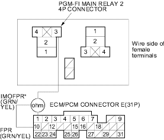
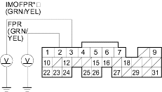

- Check for continuity between the PGM-FI main relay 2 4P connector terminal No. 3 and ECM/PCM connector terminal E10 (E1)*.

Is there continuity?
YES |
- Go to step 9. |
NO |
- Repair open in the wire between the PGM-FI main relay 2 and the ECM/PCM (E10, E1*). |

- Reinstall the PGM-FI main relay 2.
- Turn the ignition switch ON (II).
- Measure voltage between ECM/PCM connector terminal E10 (E1*) and body ground.

Is there battery voltage?
YES |
- Go to step 12. |
NO |
- Replace the PGM-FI main relay 2. |
- Turn the ignition switch OFF.
- Reconnect ECM/PCM connector E (31P).
- Turn the ignition switch ON (II), and measure voltage between ECM/PCM connector terminal E10 (E1*) and body ground within the first 2 seconds after the ignition switch was turned ON (II).

Is there battery voltage?
YES |
- Substitute a known-good ECM/PCM and recheck. If symptom/indication goes away, replace the original ECM/PCM. |
NO |
- Go to step 15. |
- Turn the ignition switch OFF.
- Remove the rear seat cushion (see page 20-95).
- Remove the access panel from the floor.